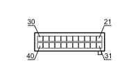

M001B BODY COMPUTER (FRONT)
- Path
- Electrical equipment > 3 CONNECTORS > M INTERMITTENT AND TIMED ELECTRONIC DEVICES > M001 BODY COMPUTER > M001B BODY COMPUTER (FRONT)
- Kind
- connector pinout (pin -> wire colour -> other end)
- Applies to
- all engines; all production periods; only with equipment: XENON GAS HEADLAMPS
- Interactive page
- https://sloeber94.github.io/elrnDB-fCrm/en/#/194005241
Applies to: all engines; all production periods; only with equipment: XENON GAS HEADLAMPS

Wiring | Colour |
|---|---|
BLU (blue) |
Pin | Cable | Destination | |||
|---|---|---|---|---|---|
Sec.. | Colour | Node | Connect. | Pin | |
22 | 0,5 | AN (light blue with black stripe) | 1 | ||
23 | 0,5 | MN (brown with black stripe) | 3 | ||
24 | 0,35 | BH (white with grey stripe) | 1 | ||
25 | 0,35 | SR (pink with red stripe) | 1 | ||
28 | 0,35 | MV (brown with green stripe) | 10 | ||
29 | 0,5 | HV (grey with green stripe) | 29 | ||
30 | 0,35 | GN (yellow with black stripe) | 4 | ||
34 | 0,5 | R (red) | 1 | ||
35 | 0,35 | BL (white with blue stripe) | 2 | ||
36 | 0,5 | M (brown) | 16 | ||
37 | 0,5 | V (green) | 15 | ||
38 | 0,5 | A (light blue) | 5 | ||
39 | 0,5 | BN (white with black stripe) | 5 | ||
40 | 0,35 | GR (yellow with red stripe) | 4 | ||
Topics linked from this page (11)
- 12 FRONT
- D001A FRONT/DASHBOARD COUPLING (FRONT)
- D004 FRONT/ENGINE COUPLING
- D097A SHORT CIRCUIT COUPLING (FRONT)
- D097B SHORT CIRCUIT COUPLING (FRONT)
- F010 LEFT HEADLAMP
- F011 RIGHT HEADLAMP
- F021 RIGHT SIDE DIRECTION INDICATOR
- I010 BONNET RELEASE SWITCH
- K020 LEFT BRAKE PAD WEAR SENSOR (SWITCH)
- P090 ALARM SIREN
Topics that link to this page (14)
- D001A FRONT/DASHBOARD COUPLING (FRONT)
- D001A FRONT/DASHBOARD COUPLING (FRONT)
- D004 FRONT/ENGINE COUPLING (FRONT)
- D004 FRONT/ENGINE COUPLING (FRONT)
- D097A SHORT CIRCUIT COUPLING (FRONT)
- D097B SHORT CIRCUIT COUPLING (FRONT)
- F010 LEFT HEADLAMP (FRONT)
- F010 LEFT HEADLAMP (FRONT)
- F011 RIGHT HEADLAMP (FRONT)
- F011 RIGHT HEADLAMP (FRONT)
- F021 RIGHT SIDE DIRECTION INDICATOR (FRONT)
- I010 BONNET RELEASE SWITCH (FRONT)
- K020 LEFT BRAKE PAD WEAR SENSOR (SWITCH) (FRONT)
- P090 ALARM SIREN (FRONT)